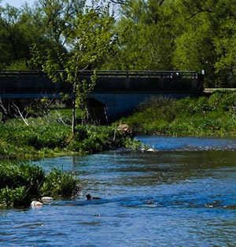

Mobile-Navigation

Hero Section
Our Mission Section
Our Mission
The TRAA Works at a Grassroots Level within the Thames River Watershed to:
Protect, enhance and regenerate a viable, multi-species, year-round fishery
Promote and participate in environmental clean-up, pollution control and rehabilitation
Breed, relocate and stock to re-establish or augment appropriate species of fish
Promote environmentally sound sport fishing practices
Form partnerships with community businesses, government agencies, special interest groups, landowners, and stakeholders inthe Thames River watershed
Increase public awareness of the unique diversity of the Thames River Watershed, its recreational oppurtunities, and its vital importance to our community
Our History Section
Our History
In the spring of 1986, the TRAA was formed by anglers concerned with the state of the fishery in the Thames River watershed, particularly the dwindling smallmouth bass population in the North Thames River.
The TRAA is not a fishing club, although most members are anglers and share fishing as a common interest. We are a "hands on" environmental group who likes to work at a grass roots level.
The TRAA is not a fishing club, although most members are anglers and share fishing as a common interest. We are a "hands on" environmental group who likes to work at a grass roots level.

The TRAA is a volunteer organization, governed by a formal constitution and by-laws. An elected Executive, with the guidence of the General Membership, sets the policies and direction for the TRAA.
The TRAA has a history of always having a core group of active members supported by those who just want to be part of the solution. Either way, every member of the TRAA is active in their advocacy for the health of the Thames River watershed and its inhbitants.
The TRAA has a history of always having a core group of active members supported by those who just want to be part of the solution. Either way, every member of the TRAA is active in their advocacy for the health of the Thames River watershed and its inhbitants.
Our team Section
Our Team
TRAA Executive Team
Rob Huber
President
Paul Holmes
Vice President
James Beaton
Secretary
Randy Bailey
Treasurer
Adam Bengen
Chairperson
TRAA Volunteer Committee Chairs
Dan Schinkelshoek
Trout
Pud Hunter
Warmwater
Jeremy Beaton
Habitat
Paul Holmes
Habitat
Randy Bailey
Habitat
Rob Huber
Public Relations
Randy Bailey
Public Relations
Paul Noble
Public Relations
Adam Bengen
Hatchery Management
Randy Bailey
Hatchery Management
Get In Touch Section
Get In Touch
Contact us via form below!
TRAA General Meeting
Guests are welcome!
The TRAA meets every second Wednesday of each month. We always try to get the meetings started by 7:00pm so try to be there a few minutes beforehand. The venue is the Western Ontario Fish & Game Protective Association's clubhouse located just east of the Dearness Home on Southdale Road (East ), on the North side of Southdale Road. The address is 790 Southdale Road East, London, Ontario.
The TRAA meets every second Wednesday of each month. We always try to get the meetings started by 7:00pm so try to be there a few minutes beforehand. The venue is the Western Ontario Fish & Game Protective Association's clubhouse located just east of the Dearness Home on Southdale Road (East ), on the North side of Southdale Road. The address is 790 Southdale Road East, London, Ontario.